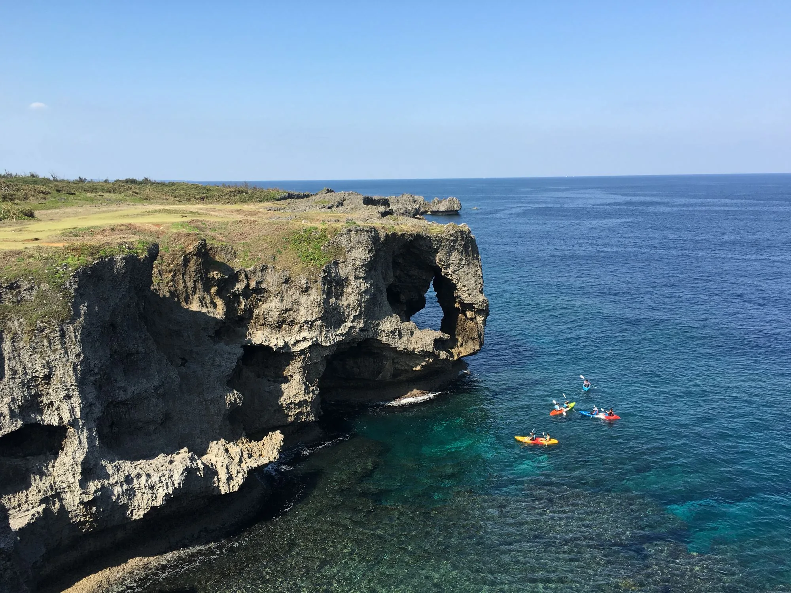
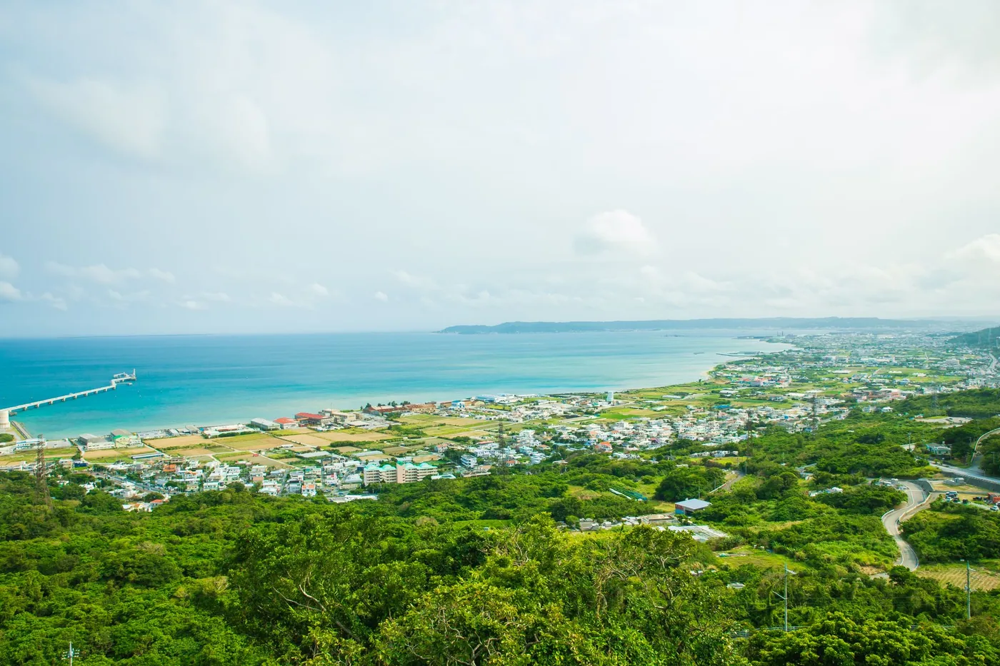

北線
想把美麗海排進去
- 適合
- 親子、第一次來沖繩
- 景點
- 萬座毛、美麗海水族館、古宇利島
- 時間
- 全程約 9 小時 50 分，車程約 4 小時 40 分

只排一天，想看美麗海還是南部文化海景
那霸飯店出發 包車一日遊 北線南線各一條
兩條都是一日路線，可以只選一條。
北線全程約 9 小時 50 分鐘，車程約 4 小時 40 分鐘，里程約 220 公里。
南線全程約 7 小時 40 分鐘，車程約 2 小時 25 分鐘，里程約 80 公里。
車程為一般路況估算，景點與順序可依需求調整，實際安排請先詢問。
北線在美麗海水族館、南線在沖繩世界 玉泉洞的時段，原行程都標示含午餐。
高速公路費、停車費、司機住宿。
其餘包含與不包含項目，請在詢問時一併確認。

照片為圖庫實拍，非角落出團紀錄，僅供氛圍參考 照片來源 Pexels：Robert Yang、Ryutaro Tsukata、William Chen
北線車程約 4 小時 40 分，南線約 2 小時 25 分；車程為一般路況估算，景點與順序可以依需求調整。
7–10 月是颱風季，出發前留意天氣；北線夏季很曬，回程也常遇到塞車。
齋場御嶽每年有兩段休息日，舊曆五月與十月各數天，出發前需要確認。
原路線依人數安排車型：1–4 人為 7 座阿爾法，5–8 人為 10 座海獅。
超時或超過 300 公里另計，實際用車時數與加價金額請先詢問確認。
依人數與日期報價，用 LINE 告訴我們幾位、哪一天、想走北線還是南線。